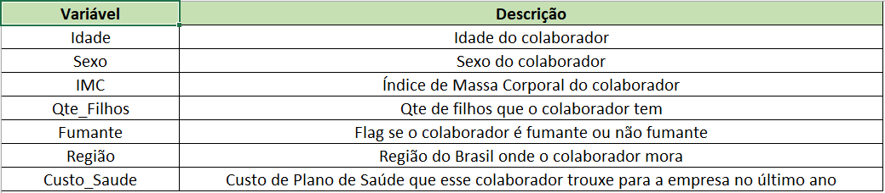

Health Insurance (People Analytics)

Contexto
Despesas com a saúde dos colaboradores são uma questão importante para qualquer empresa. Esses custos podem ser significativos e, se não forem bem gerenciados, podem afetar a lucratividade da empresa.
Esses gastos podem incluir uma variedade de custos, como seguro saúde, licenças médicas, custos de substituição de funcionários doentes e perda de produtividade devido a doenças. Além disso, os custos de saúde estão aumentando globalmente, o que pode aumentar ainda mais esses gastos para as empresas.
Mitigar esses gastos é crucial por várias razões:
- Primeiro, reduzir os custos de saúde pode melhorar diretamente a lucratividade da empresa. Segundo, pode liberar recursos que podem ser reinvestidos em outras áreas da empresa, como desenvolvimento de produtos, marketing ou expansão dos negócios.
- Além disso, um programa de saúde eficaz para os colaboradores pode levar a uma força de trabalho mais saudável e mais produtiva. Os funcionários saudáveis são geralmente mais produtivos, têm menos dias de doença e são mais capazes de contribuir para o sucesso da empresa a longo prazo.
Em suma, embora os gastos com a saúde dos colaboradores sejam um desafio para as empresas, é importante que as empresas reconheçam a importância de gerenciar e mitigar esses custos. Investir em programas de saúde eficazes para os colaboradores não é apenas uma decisão financeiramente sábia, mas também pode levar a uma força de trabalho mais saudável, mais feliz e mais produtiva. Isso, por sua vez, pode contribuir para o sucesso e a sustentabilidade da empresa a longo prazo.
Analise SWOT
Todo momento em que uma empresa enfrenta um novo desafio, principalmente não ligado a sua àrea de atuação, é necessário que se dê um passo atrás para obter uma visõ mais ampla do problema. A análise SWOT vai ajudar nesse contexto. Podemos enxergar qual o caminho de menor resistência, evitar disperdício de tempo e dinheiro focando exatamento naquilo que trará resultados práticos.
A análise SWOT é também um diagnóstico, um screenshot do momento atual da empresa. É sempre muito vantajoso, sempre que possível ter essa visão. Ela pode ser usada como Checkpoints no caminho do objetivo buscado.

Metodologia

Para desenvolver esse projeto a metodologia CRISP-DM (Cross Industry Standard Process for Data Mining) será a base para que o projeto tenha um norte de cada etapa a ser percorrida. É um modelo de processo de mineração de dados que descreve abordagens comumente usadas por especialistas em mineração de dados para atacar problemas.
1. Entendimento do Negócio
- O objetivo do projeto é:
- Descobrir quais os fatores estão mais relacionados com o aumento das despesas com plano de saúde.
- Que tipo de ações preventivas a empresa porde realizar para evitar que essa despesa atinja valores inviáveis, que venham a prejudicar seu lucro.
- Mensurar um tempo viáve para a implantação das ações necessárias.
- Desenvolver um dashboard com KPIs para o acompanhamento dos resultados.
- Estudo realizado com amostras aleatórias.
- A amostra compreende o perído de 1 ano.
- A amostra possui uma quantidade razoável de participantes (colaboradores da empresa selecionados aleatória mente por todo território nacional - área de atuação da empresa), porém as variáveis são limitadas.
- A amostra da população de dados da empresa, foi coletada pelo Departamento Médico através de querie SQL e convertida para um arquivo
- Dado que a amostra reflete uma percentual pequeno da população, essa pode não representar fielmente toda a base de dados da empresa.
- Empresas enfrentam vários desafios ao tentar reduzir gastos com planos de saúde, alguns dos principais são:
- Aumento dos custos dos serviços: Este é um dos maiores problemas encontrados nas empresas e está presente em diferentes setores.
- Uso inadequado do benefício: Este problema se agrava com o uso inadequado do benefício por parte do funcionário, que por vezes não sabe ao certo a qual especialista recorrer e acaba aumentando os gastos em consultas.
- Hábitos prejudiciais à saúde no ambiente de trabalho: Estes podem ocasionar doenças ortopédicas, resultando em um aumento nas consultas e indicações de cirurgias, por vezes desnecessárias, que poderiam ser evitadas com uma rotina mais saudável.
- Esse não é um problema isolado da empresa. Pode-se dizer que é praticamente um problema mundial, já que ano após ano os índices dos mais variados fatores relacionados à saúde só pioram, como IMC, Saúde Mental, Tabagismo etc. É preciso aprender com quem já lidou com o problema e conseguiu superá-lo.
- A princípio, após encotrada a variável, ou variáveis que estão causando o aumento na despesa, o cliente acredita que uma redução de 10%, dentro dos próximos 12 meses, será considerada uma ação bem sucedida. Pois assim poderá concentrar mais esforços, após a constatação do resultado obtido, para ampliar a margem. Assim concluirá o projeto.
2. Preparação dos Dados
Essa base, fornecida pelo Departamento Médico da empresa, possui todo o tratamento necessário já realizado. Portanto toda limpeza, formatação e tratamento de dados faltantes é dispenvável.
A amostra possui 6 variáveis explicativas (Idade, Sexo, IMC, Quantidade de filhos, Fumante e Região do Brasil) para que se compreenda a variável saída Custo_Saúde.
Metadados
Para entendimento objetivo do que cada variável represeta no escopo da análise, segue metadados:
-
Feature Engineering
Para ampliar a compreenção gráfica de algumas vaviáveis, outras foram geradas a partir destas para que a visão mais concreta pudesse ser alcançada. Assim à tabela de dados foram adicionadas novas colunas:
- A coluna qualitativa ordinal Faixas_de_IMC foi gerada a partir do benchmark de IMC.
- As colunas qualitativas nominais Obesidade (que separa colaboradores com algum grau de obesidade dos que não possuem qualquer grau), e a coluna Filhos, para dividir o grupo entre os que possuem dependentes dos que não possuem.

Base com as colunas citadas a cima adicionadas.

Benchmark das faixas de IMC.
- AED - Análise Exploratória dos Dados
- Consistência dos dados: A presença de poucos outliers sugere que a maioria dos dados é consistente e segue uma tendência ou padrão específico.
- Modelagem mais precisa: Modelos estatísticos ou de aprendizado de máquina treinados nesses dados podem ter melhor desempenho, pois os outliers podem às vezes levar a um ajuste excessivo (overfitting).
- Interpretação mais fácil: Os resultados das análises são mais fáceis de interpretar, pois os outliers podem distorcer a representação dos dados.
- O custo médio com saúde para fumante é quase 5 vezes maior do que o custo para não fumantes.
- A variância de custo para fumantes é muito maior do que para os não fumantes. Isso significa que além de dispenderem de valores maiores, a variação desses valores é grande. Para não fumantes o custo é praticamente o mesmo.
- O custo de todos os não fumantes é quase o mesmo para 25% dos fumantes.
- A amostra possui 274 funcionários fumantes, o que gerou um custo de 944 mil, frente aos 1064 não fumantes com custos de 782 mil. Ou seja, esses 274 (20%) funcionários fumantes custam 162 mil a mais do que todos os 1064 (80%) não fumantes.
- De acordo com o R quadrado, esta variável tem impacto significante nos custos com a saúde. Ser fumante explica 62% do custo de saúde para a empresa.
- Regreção Linear Múltipla
Foi realizada uma análise unidimensional em todas as variáveis para compreender melhor o cenário foco do estudo e, se necessário, lidar da melhor maneira com possíveis outliers, além de solidificar a base para a etapa seguinte.
Gráficos da análise exploratória


Na amostra, as idades estão distribuidas de forma uniforme. Não temos outliers de idade observados, o que pode ser positivo pela igualdade de representação. Por outro lado, a distribuição uniforme não fornece muita informação sobre tendências, relações de dados e não capta a variabilidade dos dados.
A média de idade da amostra é de 39 anos. O gráfico de boxplot mostra que 25% dos funcionários tem até 27 anos de idade, sendo a maior concentração entre 18 e 22 (222 funcionários). 50% da base possui idade entre 27 e 51 anos.
O histograma de IMC possui uma distribuição aproximadamente normal, o que permite uma interpretação intuitiva, além de ser amplamente aplicavel. Ainda assim será necessário atenção aos outliers, pois um único valor extremo pode distorcer a média e o desvio padrão, e à conclusões precipitadas.
A média está em 31, contendo 172 colaboradores. Uma visão a partir do boxplot mostra poucos outliers . Uma base de amostra com poucos outliers pode ter várias implicações positivas e alguns fatores que precisam de atenção.
Positivamente, podemos dizer que:
No entanto, alguns fatores que precisam de atenção, por exemplo, a verificação de viés: Uma quantidade muito pequena de outliers pode indicar que os dados foram excessivamente limpos ou que o processo de coleta de dados é enviesado.
Pode-se observar a distribuição equilibrada da amostra no gráfico de pizza, onde 51% dos colaboradores são do sexo masculino e 49% do sexo feminino.
67% dos colaboradores possuem até 2 filhos sendo que dentro desse percentual 43% não possuem filhos.
20% dos colaboradores são fumantes.
A distriguição geográfica da amostra também apresenta equilíbrio muito bom. O fato da região sudeste possuir um pouco mais de colaboradores pode ser pelo fato dessa ser a região mais populosa do país, entre outros fatores: econômicos, por exemplo.
3. Modelagem / Análise
Para entender a relação entre as variáveis da base serão utilizadas as tecnicas de Análise de Correlação e Regressão Linear Múltipla.
Posteriormente será desenvolvido um dashboard com os indicadores fundamentais para o acompanhamento dos resultados das ações realizadas.
Análise de Correlação (Variáveis Quantitatívas)
A análise de correlação é usada para medir o grau de associação entre variáveis quantitativas. Ela procura entender como uma variável se comporta em um cenário onde outra está variando, visando identificar se existe alguma relação entre a variabilidade de ambas.
Na matriz abaixo pode-se notar como as variáveis explicativas se relacionam com a variável resposta (Custo_Saúde), a Correlação de Pearson.


Pode-se observar graficamente que apesar de não ser uma relação forte, há uma relação positiva entre idade x custo de saúde e IMC x custo de saúde, ou seja, à medida que a idade ou IMC aumentam também aumenta a despesa. Um fator interessante são os aparentes "saltos" nas despesas entre as idades.
Quanto à variável "Quantidade de Filhos", essa não parece possuir qualquer tipo de relação com Custo Saúde.
Análise de Correlação (Variáveis Qualitatívas)


Nessa análise, parece que os fatores cruciais para as depesas da empresa se apresentaram: IMC tem sim uma relação significativa com o custo de saúde. À medida que a faixa de obesidade sobre, também sobem as despesas, chegando, a certo ponto quase dobrar.
De acordo com a medida R quadrado, a região explica 4,6% do custo de saúde, ou seja, isoladamente, o impacto pode ser desconsiderado, mas é necessário observar a relação dessa variável com outras, fumantes, por exemplo, como a variável IMC se comportaria junto à fumantes.
Para a variável "fumantes" a amostra apresenta claramente, no gáfico de boxplot, a discrepância entre fumantes e não fumantes. Essa pode ser a variante de maior impacto nas desepesas da empresa por diversos alguns motívos:
Como IMC e Fumantes apresentaram os maiores valores para R², o próximo passo foi verificar o resultado da junção das variáveis.
Analisar duas variáveis com um alto valor de R2 é importante por várias razões, entre elas está o poder explicativo: as variáveis independentes juntas conseguem explicar uma grande parte da variação na variável dependente.

Fumantes e IMC têm 77% de poder de explicação do Custo com Saúde.
R² das variáveis qualitativas em ordem decrescente, ou seja, do maior para o menor em poder de explicação da variável de saída.

Uma técnica estatística que usa várias variáveis explicativas para prever o resultado de uma variável resposta. O objetivo principal é estabelecer uma relação linear entre as variáveis independentes (variáveis explicativas) e a variável dependente (variável de resposta).
Ao final dessa análise espera-se poder desponder quais são os principais fatores relacionados com o Custo do Plano de Saúde na empresa e tipo de ações preventivas a empresa pode fazer de forma a diminuir esse custo.

Ser fumante aumenta, em média, R$2.381 o custo de saúde na empresa.
Para fazer um double-check, os dados foram submetidos, sem as variáveis "sexo" e "região" (como na análise realizada), a uma plataforma de IA para análises e os mesmo valores finais foram apresentados.

KNIME é uma plataforma de construção de relatórios e integração de dados.
A variável Fumantes se tornou o fator prioritário no plano de ação, pois ela sozinha tem 75% de poder de explicação sobre os custos com saúde. É necessário, de alguma forma, incentivar os colaboradores fumantes a diminuir esse hábito.
4. Validação
Foi acordado que o cliente deseja uma ação que traga redução na variável que está causando o aumento nas despesas com saúde. Para isso:
- "Fumantes" é a variável de maior influência nas despesas com saúde. O foco de ação do projeto será reduzir a despesa dos colaboradores fumantes em 10%.
- Framework 5W2H se adequa perfeitamente às necessidades de aplicação desse projeto, dado que ele se extenderá ao longo de 1 ano.
- Continuidade da melhoria a longo prazo, desevolvendo uma cultura saudável na empresa com participações em eventos da comunidade local ou mesmo internos.
5. Plano de Implementação
Para a implementação das ações necessárias utilizaremos o framework 5W2H, uma ferramenta que permitirá acompanhar o andamento do projeto, controlar o tempo, evitar o desperdício de recursos, delegar a execução das ações.
{kind=link}
A implementação ocerrerá de forma gradual, mas será fundamental criar primeiramente grupos de controle, para se ter, ao final do período de estudo, a real dimensão dos resultados obtidos. Na sequência, os objetivos por prioridade seguem da seguinte maneira:
- Um programa de consientização de hábitos saudáveis e será realizada chamar a atenção dos colaboradores para um fator tão negligenciado.
- Uma campanha de concientização sobre os perigos do tabagismo. Palestras e seminários sobre as vantagens de se largar esse hábito nocivo e as vantagens de se cuidar da saúde.
- Um programa de incentivo ao abandono do tabagismo. Com toda a base para que o colaborador se sinta acolhido e amparado ao decidir parar com o fumo.
- Em parceria com algumas clinicas podemos ajudar o colaborador que deseja, mas não se sente confiante em superar o desafio sozinho.
- Devemos ao final do 12 mês realizar uma análise dos resultados das ações realizadas ao longo do período, mas também devemos acompanhar as métricas durante esse período com pesquisas e análises dos dados coletados.
Para nortear a avaliação dos resultados, vamos supor que "deixar de fumar" teria impacto relativante para o alcance da meta desejada (redução de 10% nas despesas médicas). Para tal realização, será necessário que 66 funcionários abandonem o tabagismo.
Dashboard Power BI
Acesse aqui o dashboard para acompanhar a evolução dos resultados das ações aplicadas.
6. Conclusão
Esse projeto teve como objetivo sanar uma dor do cliente que estava observando um gasto excessivo com despesas médicas, mas não enxergava qual fator o estava causando.
Com os dados fornecidos pela Diretoria de Pessoal através do Departamento Médico, pode ser desenvolvido análises de associação como Correlação de Pearson, R-quadrado e Regressão Linear Múltipla que nos levaram a encontrar o foco do problema.
Encontrado o motivo da despesa, um plano de ação foi apresentado com ferramentas que permitem o acompanhamento da evolução dos resultados.
7. Próximos Passos
A aplicação das ações necessárias é prática e objetiva. Para que não venha a sofre desse problema no futuro, basta acompanhar as metricas em períodos de tempo para que em questão de tempo, se as ações forem bem aplicadas, a saúde se tornará uma questão cultural na empresa. Assim elém de evitar despesas desnecessárias, a empresa, com certeza, aumentará sua margem com o aumento da produtividade por funcionários mais saudáveis.
Anexos
Acesso aqui o arquivo PDF com todos os gráficos da AED e da Análise de Correlação.